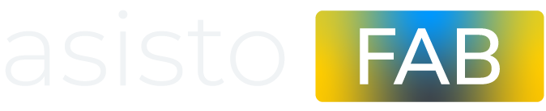
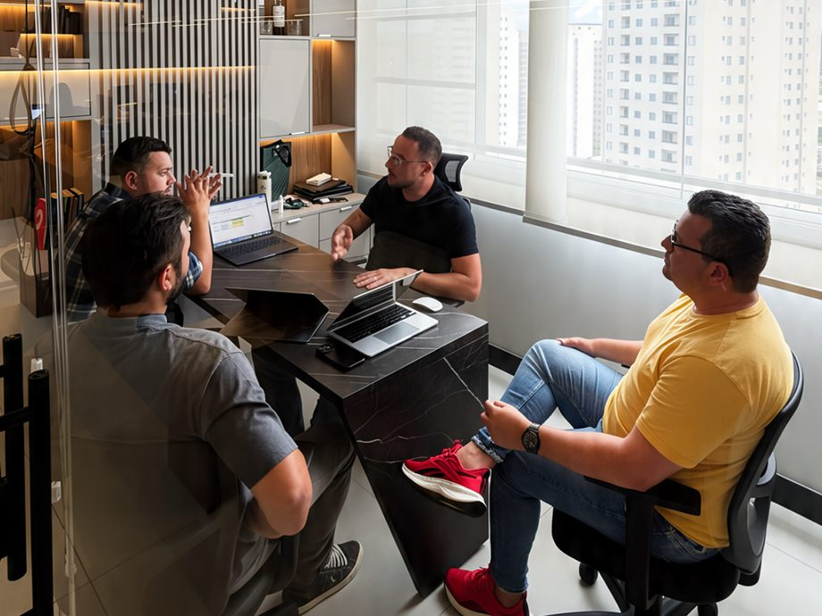
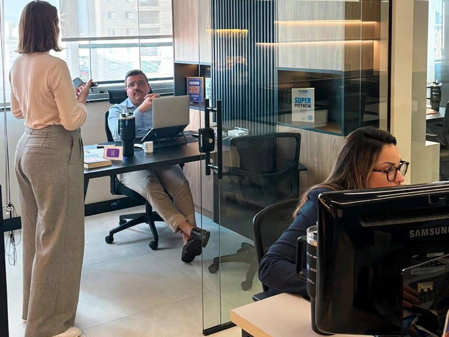
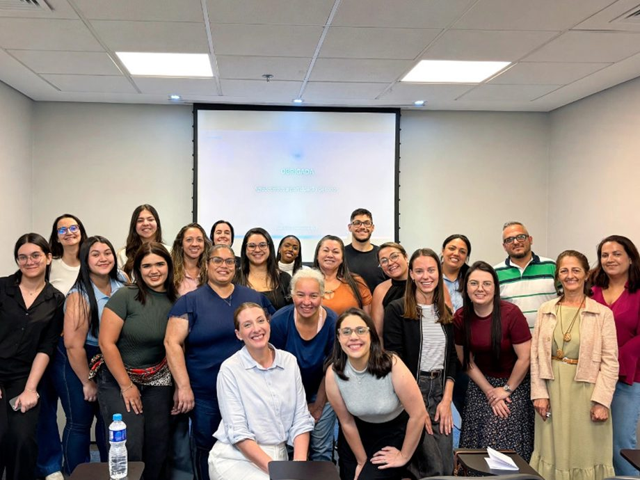
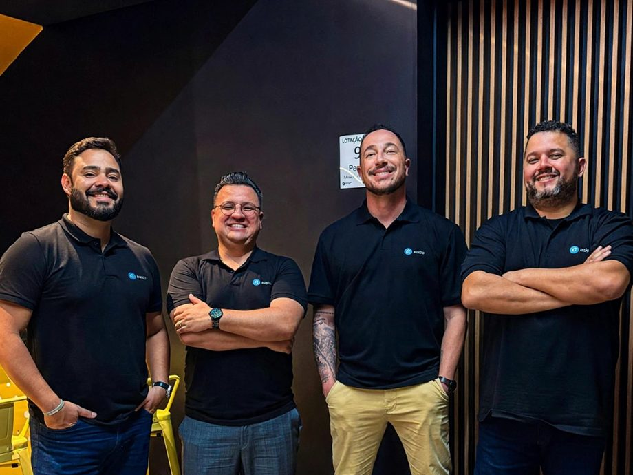
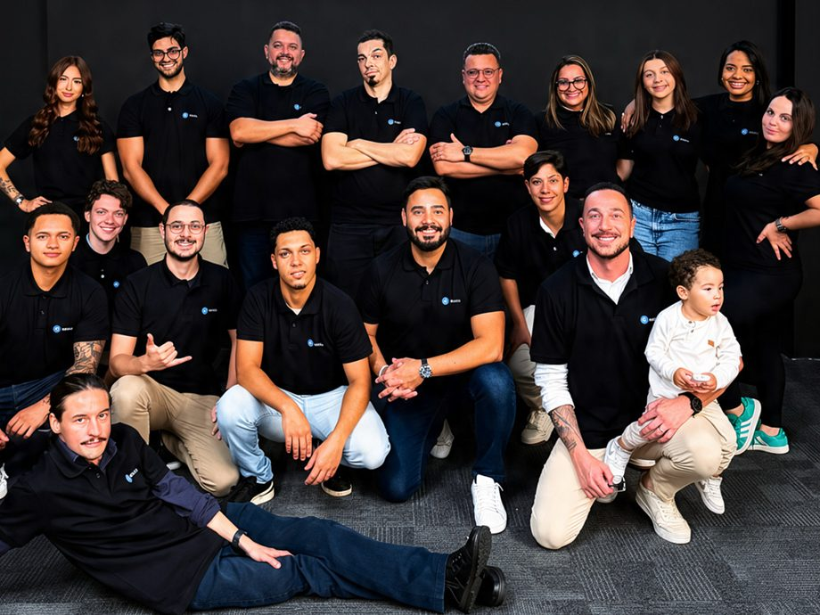
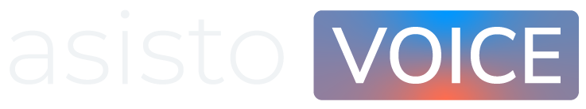

Cadeia moveleira
Fábrica, representante, loja e transportador num fluxo só, sem retrabalho.
Saiba maisTrabalhamos com um portfólio de soluções que ajudam empresas a organizar processos, automatizar tarefas e tomar decisões com mais segurança.
Explorar soluçõesOperações conectadas.
Transacionados.
Usuários atendidos.





Uma empresa de tecnologia criada para simplificar operações complexas. O equilíbrio entre inteligência humana e artificial gera soluções práticas que otimizam processos, elevam a qualidade do atendimento e dão mais clareza à tomada de decisão.
Fale com a AsistoModelo de atuação
Produto
Prontos e já validados em operação.
Inclui
Serviço
Montado conforme o que o negócio precisa. Antes de propor, a Asisto estuda o cliente.
Começa por
TOTVS e SAP
Suporte consultivo, integração de sistemas e evolução de ambientes corporativos, pra quem já usa essas plataformas.
Serviço
Potencial
Resultado de cada serviço, aplicado ao seu negócio.
Aplicativos e sistemas desenhados para o processo do cliente.
Melhoria de processo por meio de tecnologia.
Estrutura pra organizar contratos, financeiro e operação.
Tarefa manual vira fluxo automático.
Sistemas conversando entre si, sem retrabalho.
ERP próprio
Nosso ERP nasce de anos de desenvolvimento próprio e consultoria avançada aplicados à indústria, não módulos soltos, mas uma solução única, que organiza a gestão, automatiza tarefas e integra sistemas, pronta para operar em duas vertentes.
Financeiro, contratos e operação num só sistema, sem planilha solta.
Do fornecedor à revenda, no fluxo de quem importa e revende.
Do planejamento à entrega, no fluxo de quem produz em série.
Prateleira

Fábrica, representante, loja e transportador num fluxo só, sem retrabalho.
Saiba maisTecnologia própria pra indústria química e seriada, com certificação de produto nativa.
Saiba maisAtendimento e venda pelo WhatsApp, com funil kanban e follow-up automático.
Saiba mais
Central de relacionamento multicanal: voz, WhatsApp, chat e e-mail.
Saiba maisRecrutamento, aprendizado e desempenho numa única plataforma.
Saiba maisMódulos
Sob medida · Comparativo
O que é
Um time dedicado assume um desafio do cliente.
O que a Asisto faz
Desenvolve e entrega parte da solução, inclusive um MVP em alguns casos.
O cliente recebe
Resultado visível antes de contratar.
Depois
Evolui para contrato de projeto.
O que é
Uma imersão pontual no processo do cliente.
O que a Asisto faz
Estuda o processo e mapeia as possibilidades, sem desenvolvimento nesta etapa.
O cliente recebe
Diagnóstico.
Depois
Base para decidir os próximos passos.
Sob consulta. Definido caso a caso.
Diagnóstico
O que o diagnóstico levanta:
Pontos de vulnerabilidade do processo
Onde uma automação ou plataforma pode cobrir
Quanto da operação o sistema atual cobre, e quanto não cobre
Risco a que a operação está exposta
Dinheiro que fica na mesa
Retrabalho
Como a Asisto atua
Entender o desafio
Alinhar prioridades
Entregar em ciclos
Validar o resultado
Ajustar
e evoluir
Resultados em ciclos curtos, sem esperar o fim do projeto.
O que entra em cada ciclo é definido junto com quem opera.
O que aprendemos em cada ciclo ajusta e melhora o próximo.
Nosso time
Fundador e CEO da Asisto, especialista em ERP e transformação digital. Empreendedor serial, trabalhou com os ecossistemas Totvs e SAP e lidera há mais de 15 anos projetos de gestão, automação e IA.
Sócio da Asisto, liderou o ecossistema da DSOP, uma das maiores empresas de educação financeira do país. Formado em Logística, com pós em Terapia Financeira, cuida da visão financeira da empresa.
Arquiteto de soluções com trajetória no ecossistema Totvs, onde atuou como especialista sênior. Une tecnologia e estratégia comercial, com experiência em lançamento de produtos, pricing e vendas.
Conecta produto, atendimento e operação no dia a dia da Asisto. Construiu sua trajetória em gestão de processos e times de suporte, experiência que hoje sustenta a entrega da empresa ao cliente.
Dúvidas
A Asisto é uma empresa de tecnologia que atua em dois modelos: produto e serviço. No produto, entregamos soluções prontas e já validadas em operação. No serviço, montamos a solução sob medida, conforme o que o negócio precisa.
As soluções prontas (prateleira) já foram validadas em operação e cobrem gestão empresarial, atendimento e vendas, contact center multicanal, gestão de aprendizado e a cadeia moveleira. O sob medida é desenhado para o processo do cliente: antes de propor, a Asisto estuda o negócio.
É um ERP próprio, desenvolvido pela Asisto e aplicado à indústria, que organiza a gestão, automatiza tarefas e integra sistemas. Opera em duas vertentes: a química, para quem importa e revende, e a seriada, para quem produz em série.
Por uma imersão ou por um diagnóstico. Na imersão, um time dedicado assume um desafio do cliente e entrega parte da solução, inclusive um MVP em alguns casos. No diagnóstico, a Asisto estuda o processo e mapeia as possibilidades, sem desenvolvimento nessa etapa.
Um levantamento de onde o processo perde e onde a tecnologia entra: pontos de vulnerabilidade, onde uma automação ou plataforma pode atuar, quanto da operação o sistema atual cobre, riscos, retrabalho e dinheiro que fica na mesa. Serve de base para decidir os próximos passos.
Sim. A consultoria dá suporte consultivo, integração de sistemas e evolução de ambientes corporativos para quem já usa essas plataformas.
Com metodologia ágil: entendemos o desafio, alinhamos prioridades com o cliente, entregamos em ciclos curtos, validamos o resultado e ajustamos. Você vê resultados ao longo do projeto, sem esperar o fim.
Os valores de projetos sob medida são definidos caso a caso, sob consulta. Fale com a gente pelo botão Contato, pelo WhatsApp ou peça uma demonstração.